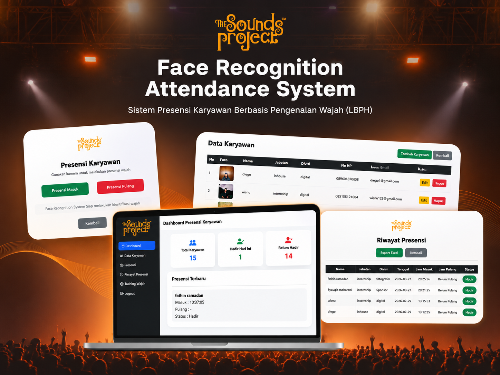
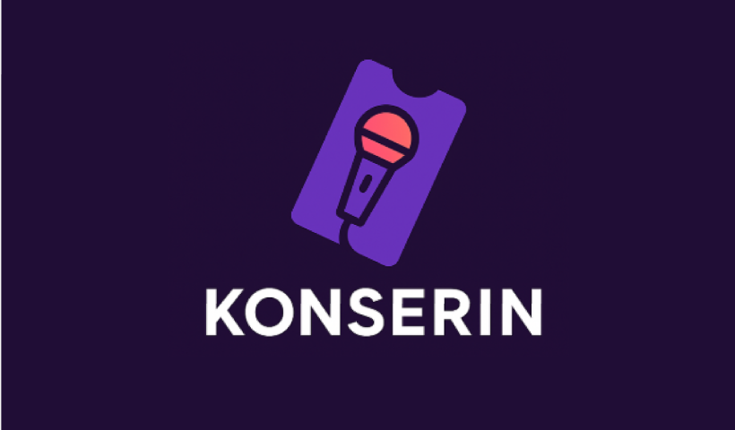

PORTFOLIO 2026
Mahasiswa Sistem Informasi Universitas Gunadarma yang tertarik pada Software Development, UI/UX Design, dan Data Analytics.
Lihat Proyek →Halo, saya Fathin Ramadhan, mahasiswa Sistem Informasi di Universitas Gunadarma. Saya memiliki ketertarikan dalam bidang teknologi informasi, khususnya pengembangan aplikasi, desain UI/UX, dan analisis data.
Saya senang mempelajari teknologi baru dan mengimplementasikannya melalui berbagai proyek akademik maupun pengalaman organisasi. Saya juga terus mengembangkan kemampuan teknis, komunikasi, dan kerja sama tim.
03 / MY EXPERTISE
Pengembangan aplikasi dan sistem berbasis web, serta pemrograman dan pengelolaan database.
Perancangan antarmuka dan pengalaman pengguna melalui wireframe, prototyping, dan design system.
Pengolahan, eksplorasi, dan visualisasi data untuk menghasilkan informasi yang bermanfaat.
04 / SELECTED PROJECTS

ACADEMIC RESEARCH · SOFTWARE DEVELOPMENT · COMPUTER VISION
Pengembangan sistem presensi karyawan berbasis web sebagai proyek penelitian untuk The Sounds Project (TSP). Sistem ini menerapkan algoritma Local Binary Patterns Histograms (LBPH) menggunakan OpenCV untuk mengenali wajah dan melakukan pencatatan presensi.

UI/UX DESIGN · MOBILE APPLICATION
Perancangan UI/UX aplikasi mobile untuk pemesanan tiket konser menggunakan metode Design Thinking. Aplikasi ini dirancang untuk memudahkan pengguna menemukan event, memesan tiket, melakukan pembayaran, dan mengakses tiket digital.
05 / GET IN TOUCH
Saya terbuka untuk kesempatan magang, kolaborasi proyek, dan pengalaman baru di bidang teknologi informasi.